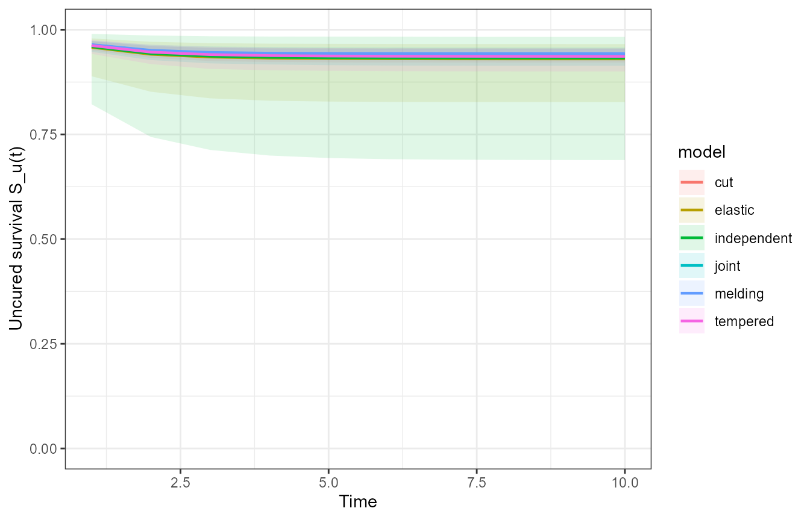
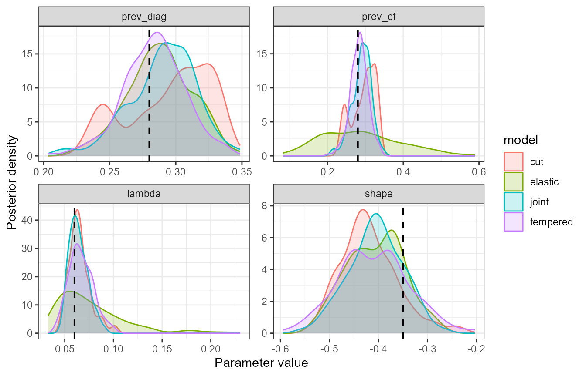

4. Evidence Synthesis from Published Summary Tables and UKHSA Surveillance Reports
Source:vignettes/published-and-surveillance-data.Rmd
published-and-surveillance-data.RmdOverview
In most evidence synthesis applications for tuberculosis (TB), researchers do not have access to linked individual participant data (IPD). Instead, evidence must be synthesized from published literature and routine public health reports:
- LTBI Testing Data (\(M_1\), from published summary tables): Tables in screening papers report subgroup sample sizes \(N_g\), positive test counts \(y_g\), and group-level risk factors \(\mathbf{x}_g\) (e.g., age group, TB incidence in country of birth, reason for screening).
-
Active TB Progression Data (\(M_2\), from papers or UKHSA / ETS
reports): Published progression evidence typically arrives in
one of three aggregate formats:
-
Format A — Cumulative Subgroup Case Counts: Number
of active TB cases \(d_g\) out of
cohort size \(N_g\) over a cumulative
follow-up window \([0, T_g]\) (as in
load_predict_aggregated()/raw-data/aggregated_data.csv). - Format B — Annual / Interval Surveillance Counts by Time Since Entry: Active TB notifications \(d_g\) occurring in time interval \([t_{0,g}, t_{1,g}]\) (e.g., Year 0–1, Year 1–2, …, Year 4–5 after UK arrival in UKHSA Enhanced TB Surveillance reports) out of an initial entry cohort \(N_g\).
-
Format C — Published Kaplan-Meier Life Tables:
Digitized survival intervals \([t_{0,g},
t_{1,g}]\) with number at risk \(R_g\) (
n_risk) and interval event counts \(d_g\) (d), as inload_abubakar_km()(raw-data/KMdata.txt).
-
Format A — Cumulative Subgroup Case Counts: Number
of active TB cases \(d_g\) out of
cohort size \(N_g\) over a cumulative
follow-up window \([0, T_g]\) (as in
evidsynth_fit() and compare_evidsynth()
accept all three published data formats directly in
progression_data—without requiring any individual-level
rows—and support all six synthesis strategies ("cut",
"joint", "independent",
"melding", "elastic", and
"tempered").
Mathematical Formulation for Published Aggregate & Interval Data
For any published stratum or time interval \(g = 1, \dots, G_{\text{surv}}\) spanning time window \([t_{0,g}, t_{1,g}]\) with group covariate vector \(\mathbf{x}_g\):
1. Module 1: Subgroup LTBI Positivity Table
Let \(\pi_{\text{diag}, m} = \text{logit}^{-1}(\alpha_{\text{diag}} + \mathbf{x}_m^\top \boldsymbol{\beta})\) denote the true LTBI prevalence in published stratum \(m = 1, \dots, M_{\text{agg}}\). With test sensitivity \(\text{sens}_k\) and specificity \(\text{spec}_k\):
\[ y_m \sim \text{Binomial}(N_m, \, p_{\text{pos}, m}), \qquad p_{\text{pos}, m} = \pi_{\text{diag}, m} \, \text{sens}_k + (1 - \pi_{\text{diag}, m})(1 - \text{spec}_k). \]
2. Module 2: Unified Mixture Cure Interval Likelihood
Let \(\pi_{\text{surv}, g} =
\text{logit}^{-1}(\alpha_{\text{surv}} + \mathbf{x}_g^\top
\boldsymbol{\beta})\) denote the survival module’s baseline LTBI
prevalence in group \(g\), and let
\(\tilde{\pi}_g\) denote the effective
uncured fraction (\(\tilde{\pi}_g =
\pi_{\text{surv}, g}\) for an unselected cohort
cohort_type = "all", or \(\tilde{\pi}_g = \text{PPV}_g\) for a
test-positive cohort cohort_type = "pos_only").
Under the mixture cure model with uncured survival function \(S_u(t \mid \lambda, \gamma)\), the population survival at time \(t\) is:
\[ S_{\text{pop}, g}(t) = (1 - \tilde{\pi}_g) + \tilde{\pi}_g \, S_u(t \mid \lambda, \gamma). \]
The probability that an infected individual progresses to active TB during interval \([t_{0,g}, t_{1,g}]\) is \(\tilde{\pi}_g \left[ S_u(t_{0,g}) - S_u(t_{1,g}) \right]\). This yields exact Binomial likelihoods for all three published formats:
Format A: Cumulative Subgroup Table over \([0, T_g]\) (\(t_{0,g} = 0, t_{1,g} = T_g\), Denominator = Cohort Size \(N_g\))
Since \(S_u(0) = 1\), the cumulative probability of active TB over \([0, T_g]\) in group \(g\) is:
\[ p_g = \tilde{\pi}_g \left[ 1 - S_u(T_g \mid \lambda, \gamma) \right], \qquad d_g \sim \text{Binomial}(N_g, \, p_g). \]
(Note: In earlier BUGS/JAGS implementations, the latent integer count \(X_{\text{latent}, g} = \lfloor \pi_g N_g \rfloor\) had to be truncated to pass as a binomial denominator for \(X_{\text{TB}, g} \sim \text{Binomial}(X_{\text{latent}, g}, \lambda)\). Marginalizing over the latent binomial count \(X_{\text{latent}, g} \sim \text{Binomial}(N_g, \tilde{\pi}_g)\) yields the exact analytical binomial distribution \(\text{Binomial}(N_g, \tilde{\pi}_g [1 - S_u(T_g)])\) with smooth HMC gradients!)
Format B: UKHSA / ETS Annual Surveillance Counts in \([t_{0,g}, t_{1,g}]\) (Denominator = Initial Entry Cohort \(N_g\))
When a surveillance report tabulates annual active TB cases \(d_g\) in Year 0–1 (\([0,1]\)), Year 1–2 (\([1,2]\)), …, Year \(L-1\) to \(L\) (\([L-1, L]\)) relative to the initial entry cohort denominator \(N_g\):
\[ p_g = S_{\text{pop}, g}(t_{0,g}) - S_{\text{pop}, g}(t_{1,g}) = \tilde{\pi}_g \left[ S_u(t_{0,g} \mid \lambda, \gamma) - S_u(t_{1,g} \mid \lambda, \gamma) \right], \qquad d_g \sim \text{Binomial}(N_g, \, p_g). \]
Format C: Published Kaplan-Meier Life Table in \([t_{0,g}, t_{1,g}]\) (Denominator = Risk Set \(R_g\) at \(t_{0,g}\))
When a digitized Kaplan-Meier curve or life table reports the number
still at risk \(R_g\)
(n_risk) at the start of interval \(t_{0,g}\), we condition on survival up to
\(t_{0,g}\) (\(T > t_{0,g}\)):
\[ q_g = P(T \in (t_{0,g}, t_{1,g}] \mid T > t_{0,g}) = \frac{\tilde{\pi}_g \left[ S_u(t_{0,g} \mid \lambda, \gamma) - S_u(t_{1,g} \mid \lambda, \gamma) \right]}{(1 - \tilde{\pi}_g) + \tilde{\pi}_g \, S_u(t_{0,g} \mid \lambda, \gamma)}, \qquad d_g \sim \text{Binomial}(R_g, \, q_g). \]
Worked Examples
Example 1: Published Kaplan-Meier Life Table
(load_abubakar_km())
Instead of reconstructing 6,380 pseudo-individual rows
(load_abubakar_2018()), load_abubakar_km()
loads the 69 published Kaplan-Meier intervals (t_start,
t_end, n_risk, d) alongside the
aggregate IGRA count (\(y = 1444, n =
6380\)). Because Stan evaluates 69 binomial interval terms rather
than 6,380 individual rows, all 6 synthesis models fit in seconds on the
exact published data:
abub_km <- load_abubakar_km()
head(abub_km$progression_data)
#> # A tibble: 6 × 5
#> t_start t_end n_risk d n_censored
#> <dbl> <dbl> <int> <int> <int>
#> 1 0 0.0601 6380 0 6
#> 2 0.0601 0.0840 6374 6 2
#> 3 0.0840 0.0959 6366 0 1
#> 4 0.0959 0.108 6365 0 1
#> 5 0.108 0.120 6364 7 2
#> 6 0.120 0.144 6355 0 2
comp_km <- compare_evidsynth(
prevalence_data = abub_km$prevalence_data,
progression_data = abub_km$progression_data,
models = c("cut", "joint", "independent", "melding", "elastic", "tempered"),
imperfect_test = TRUE,
surv_dist = "gompertz",
t_lim = 10,
chains = 1,
n_iter = 400,
n_burnin = 200,
n_cut_subsamples = 10,
seed = 401
)
knitr::kable(comp_km$summary_table, digits = 3)| model | variable | mean | median | sd | mad | q5 | q95 | rhat | ess_bulk | ess_tail |
|---|---|---|---|---|---|---|---|---|---|---|
| cut | prev_diag | 0.216 | 0.216 | 0.017 | 0.019 | 0.192 | 0.245 | 1.016 | 13.973 | NA |
| cut | prev_cf | 0.216 | 0.216 | 0.017 | 0.019 | 0.192 | 0.245 | 1.016 | 13.973 | NA |
| cut | ppv_cf | 0.796 | 0.790 | 0.049 | 0.048 | 0.707 | 0.865 | 1.043 | 10.842 | NA |
| cut | lambda | 0.060 | 0.059 | 0.011 | 0.011 | 0.043 | 0.077 | 1.006 | 43.450 | 72.103 |
| cut | shape | -0.957 | -0.951 | 0.116 | 0.116 | -1.145 | -0.774 | 1.017 | 75.969 | 119.860 |
| cut | sens[1] | 0.832 | 0.820 | 0.041 | 0.049 | 0.776 | 0.913 | 1.571 | 2.247 | NA |
| cut | spec[1] | 0.942 | 0.940 | 0.014 | 0.011 | 0.915 | 0.961 | 1.045 | 13.456 | NA |
| joint | prev_diag | 0.220 | 0.222 | 0.026 | 0.025 | 0.172 | 0.261 | 1.005 | 99.293 | 178.629 |
| joint | prev_cf | 0.220 | 0.222 | 0.026 | 0.025 | 0.172 | 0.261 | 1.005 | 99.293 | 178.629 |
| joint | ppv_cf | 0.816 | 0.834 | 0.088 | 0.078 | 0.651 | 0.933 | 1.021 | 126.032 | 89.111 |
| joint | lambda | 0.058 | 0.058 | 0.012 | 0.011 | 0.042 | 0.082 | 1.004 | 151.244 | 113.499 |
| joint | shape | -0.954 | -0.958 | 0.128 | 0.123 | -1.164 | -0.763 | 0.998 | 161.513 | 154.069 |
| joint | sens[1] | 0.844 | 0.848 | 0.039 | 0.035 | 0.770 | 0.901 | 1.055 | 40.692 | 43.633 |
| joint | spec[1] | 0.948 | 0.951 | 0.023 | 0.022 | 0.906 | 0.980 | 1.019 | 122.001 | 89.111 |
| independent | prev_diag | 0.219 | 0.221 | 0.024 | 0.023 | 0.172 | 0.252 | 1.001 | 96.876 | 106.358 |
| independent | prev_cf | 0.247 | 0.190 | 0.196 | 0.143 | 0.051 | 0.671 | 0.998 | 56.968 | 86.900 |
| independent | ppv_cf | 0.769 | 0.816 | 0.170 | 0.147 | 0.449 | 0.976 | 1.006 | 57.832 | 93.832 |
| independent | lambda | 0.094 | 0.065 | 0.085 | 0.051 | 0.019 | 0.262 | 1.003 | 54.965 | 78.462 |
| independent | shape | -0.949 | -0.948 | 0.139 | 0.144 | -1.179 | -0.730 | 1.002 | 109.447 | 154.069 |
| independent | sens[1] | 0.849 | 0.850 | 0.034 | 0.035 | 0.792 | 0.907 | 1.007 | 138.263 | 103.236 |
| independent | spec[1] | 0.948 | 0.951 | 0.022 | 0.021 | 0.908 | 0.977 | 1.014 | 87.825 | 147.256 |
| melding | prev_diag | 0.227 | 0.228 | 0.005 | 0.006 | 0.218 | 0.235 | 1.015 | 116.154 | 147.256 |
| melding | prev_cf | 0.227 | 0.228 | 0.005 | 0.006 | 0.218 | 0.235 | 1.015 | 116.154 | 147.256 |
| melding | ppv_cf | 0.840 | 0.845 | 0.063 | 0.064 | 0.727 | 0.931 | 1.005 | 189.336 | 125.441 |
| melding | lambda | 0.056 | 0.056 | 0.009 | 0.009 | 0.042 | 0.070 | 1.034 | 157.676 | 70.802 |
| melding | shape | -0.950 | -0.958 | 0.147 | 0.151 | -1.168 | -0.688 | 1.017 | 173.462 | 128.337 |
| melding | sens[1] | 0.850 | 0.853 | 0.033 | 0.035 | 0.793 | 0.898 | 1.014 | 377.463 | 93.817 |
| melding | spec[1] | 0.951 | 0.956 | 0.023 | 0.021 | 0.909 | 0.980 | 0.999 | 186.733 | 96.061 |
| elastic | prev_diag | 0.215 | 0.217 | 0.024 | 0.022 | 0.173 | 0.254 | 1.019 | 119.775 | 99.622 |
| elastic | prev_cf | 0.197 | 0.189 | 0.075 | 0.080 | 0.094 | 0.327 | 1.046 | 147.839 | 80.343 |
| elastic | ppv_cf | 0.775 | 0.792 | 0.116 | 0.120 | 0.562 | 0.937 | 1.000 | 120.880 | 154.069 |
| elastic | lambda | 0.076 | 0.067 | 0.037 | 0.024 | 0.036 | 0.147 | 1.048 | 139.633 | 81.544 |
| elastic | shape | -0.960 | -0.943 | 0.141 | 0.151 | -1.190 | -0.732 | 1.057 | 154.828 | 131.792 |
| elastic | sens[1] | 0.853 | 0.855 | 0.030 | 0.025 | 0.798 | 0.895 | 0.997 | 198.009 | 113.499 |
| elastic | spec[1] | 0.946 | 0.949 | 0.022 | 0.018 | 0.909 | 0.977 | 1.053 | 116.579 | 126.755 |
| tempered | prev_diag | 0.208 | 0.216 | 0.032 | 0.036 | 0.152 | 0.252 | 1.039 | 42.619 | 131.792 |
| tempered | prev_cf | 0.208 | 0.216 | 0.032 | 0.036 | 0.152 | 0.252 | 1.039 | 42.619 | 131.792 |
| tempered | ppv_cf | 0.779 | 0.798 | 0.108 | 0.124 | 0.598 | 0.919 | 1.046 | 38.171 | 116.395 |
| tempered | lambda | 0.060 | 0.060 | 0.016 | 0.015 | 0.037 | 0.087 | 1.047 | 38.029 | 88.842 |
| tempered | shape | -0.882 | -0.860 | 0.190 | 0.177 | -1.220 | -0.601 | 1.043 | 157.297 | 44.655 |
| tempered | sens[1] | 0.852 | 0.854 | 0.032 | 0.030 | 0.795 | 0.902 | 0.999 | 153.442 | 133.349 |
| tempered | spec[1] | 0.938 | 0.942 | 0.028 | 0.033 | 0.890 | 0.975 | 1.046 | 38.283 | 128.893 |
knitr::kable(diagnose_feedback(comp_km), digits = 3)| model | prev_diag_mean | prev_diag_sd | prev_cf_mean | prev_cf_sd | feedback_shift | conflict_diff_median | conflict_prob_pos | waic_surv | elpd_waic | p_waic |
|---|---|---|---|---|---|---|---|---|---|---|
| cut | 0.216 | 0.017 | 0.216 | 0.017 | 0.000 | 0.000 | 0.00 | 494.345 | -247.172 | 9.914 |
| joint | 0.220 | 0.026 | 0.220 | 0.026 | 0.004 | 0.000 | 0.00 | 495.921 | -247.960 | 11.044 |
| independent | 0.219 | 0.024 | 0.247 | 0.196 | 0.003 | -0.030 | 0.44 | 493.347 | -246.674 | 9.178 |
| melding | 0.227 | 0.005 | 0.227 | 0.005 | 0.011 | 0.000 | 0.00 | 495.944 | -247.972 | 11.025 |
| elastic | 0.215 | 0.024 | 0.197 | 0.075 | -0.001 | -0.024 | 0.38 | 497.106 | -248.553 | 12.308 |
| tempered | 0.208 | 0.032 | 0.208 | 0.032 | -0.008 | 0.000 | 0.00 | 510.156 | -255.078 | 21.016 |
plot_survival_comparison(comp_km, type = "uncured")
Example 2: UKHSA / ETS Annual Surveillance Counts by Year Since Entry
Next, consider combining a published LTBI survey (\(y\) positive out of \(n\) tested) with an annual surveillance report (such as UKHSA Enhanced TB Surveillance linked to migrant entry denominators) reporting active TB cases in Years 1 through 5 after entry:
pub_sim <- create_fake_published_data(
n_groups = 6,
n_per_group = 500,
n_surveillance = 5000,
p_ltbi = 0.28,
p_ltbi_surv = 0.28,
sens = 0.85,
spec = 0.95,
surv_dist = "gompertz",
shape = -0.35,
rate = 0.06,
t_horizon = 5,
seed = 402
)
knitr::kable(pub_sim$interval_table)| year_since_entry | t_start | t_end | n | d |
|---|---|---|---|---|
| 1 | 0 | 1 | 5000 | 75 |
| 2 | 1 | 2 | 5000 | 43 |
| 3 | 2 | 3 | 5000 | 37 |
| 4 | 3 | 4 | 5000 | 19 |
| 5 | 4 | 5 | 5000 | 11 |
comp_ukhsa <- compare_evidsynth(
prevalence_data = pub_sim$prevalence_data,
progression_data = pub_sim$interval_table,
models = c("cut", "joint", "elastic", "tempered"),
imperfect_test = TRUE,
surv_dist = "gompertz",
t_lim = 10,
chains = 1,
n_iter = 400,
n_burnin = 200,
n_cut_subsamples = 10,
seed = 402
)
knitr::kable(
evaluate_comparison(comp_ukhsa, truth = pub_sim$truth)$parameter_metrics,
digits = 3
)| model | variable | truth | post_mean | post_median | post_sd | bias | rmse | cov_95 | width_95 |
|---|---|---|---|---|---|---|---|---|---|
| cut | prev_diag | 0.28 | 0.295 | 0.303 | 0.031 | 0.015 | 0.034 | TRUE | 0.091 |
| cut | prev_cf | 0.28 | 0.295 | 0.303 | 0.031 | 0.015 | 0.034 | TRUE | 0.091 |
| cut | lambda | 0.06 | 0.065 | 0.064 | 0.011 | 0.005 | 0.012 | TRUE | 0.046 |
| cut | shape | -0.35 | -0.419 | -0.424 | 0.059 | -0.069 | 0.090 | TRUE | 0.235 |
| cut | sens[1] | 0.85 | 0.837 | 0.837 | 0.033 | -0.013 | 0.035 | TRUE | 0.107 |
| cut | spec[1] | 0.95 | 0.948 | 0.954 | 0.025 | -0.002 | 0.025 | TRUE | 0.088 |
| joint | prev_diag | 0.28 | 0.290 | 0.292 | 0.025 | 0.010 | 0.027 | TRUE | 0.097 |
| joint | prev_cf | 0.28 | 0.290 | 0.292 | 0.025 | 0.010 | 0.027 | TRUE | 0.097 |
| joint | lambda | 0.06 | 0.064 | 0.063 | 0.009 | 0.004 | 0.010 | TRUE | 0.035 |
| joint | shape | -0.35 | -0.406 | -0.402 | 0.055 | -0.056 | 0.078 | TRUE | 0.201 |
| joint | sens[1] | 0.85 | 0.850 | 0.854 | 0.034 | 0.000 | 0.034 | TRUE | 0.121 |
| joint | spec[1] | 0.95 | 0.949 | 0.952 | 0.022 | -0.001 | 0.022 | TRUE | 0.084 |
| elastic | prev_diag | 0.28 | 0.288 | 0.288 | 0.024 | 0.008 | 0.026 | TRUE | 0.093 |
| elastic | prev_cf | 0.28 | 0.288 | 0.281 | 0.103 | 0.008 | 0.104 | TRUE | 0.380 |
| elastic | lambda | 0.06 | 0.077 | 0.067 | 0.036 | 0.017 | 0.040 | TRUE | 0.145 |
| elastic | shape | -0.35 | -0.406 | -0.403 | 0.058 | -0.056 | 0.081 | TRUE | 0.217 |
| elastic | sens[1] | 0.85 | 0.848 | 0.852 | 0.039 | -0.002 | 0.039 | TRUE | 0.152 |
| elastic | spec[1] | 0.95 | 0.947 | 0.950 | 0.022 | -0.003 | 0.022 | TRUE | 0.082 |
| tempered | prev_diag | 0.28 | 0.283 | 0.284 | 0.023 | 0.003 | 0.023 | TRUE | 0.092 |
| tempered | prev_cf | 0.28 | 0.283 | 0.284 | 0.023 | 0.003 | 0.023 | TRUE | 0.092 |
| tempered | lambda | 0.06 | 0.067 | 0.066 | 0.012 | 0.007 | 0.014 | TRUE | 0.049 |
| tempered | shape | -0.35 | -0.410 | -0.412 | 0.072 | -0.060 | 0.093 | TRUE | 0.266 |
| tempered | sens[1] | 0.85 | 0.854 | 0.857 | 0.031 | 0.004 | 0.031 | TRUE | 0.118 |
| tempered | spec[1] | 0.95 | 0.946 | 0.948 | 0.020 | -0.004 | 0.020 | TRUE | 0.070 |
plot_model_comparison(
comp_ukhsa,
variables = c("prev_diag", "prev_cf", "lambda", "shape"),
truth = c(prev_diag = 0.28, prev_cf = 0.28, lambda = 0.06, shape = -0.35)
)
Example 3: Published Multi-Stratum Contingency Table
(load_predict_aggregated())
Finally, when a publication reports a subgroup contingency table
containing cohort sizes (n), positive LTBI tests
(y), and cumulative active TB cases (d)
stratified by covariates (such as reasonforscreening and
country-of-birth TB incidence inc_cob_participant2), we can
pass the summary table directly to evidsynth_fit() or
compare_evidsynth():
pred_agg <- load_predict_aggregated(
collapse_by = c("reasonforscreening", "inc_cob_participant2"),
t_horizon = 5
)
knitr::kable(pred_agg$summary_table)| reasonforscreening | inc_cob_participant2 | n | y | d | t_start | t_end |
|---|---|---|---|---|---|---|
| Contact | <40 | 435 | 87 | 8 | 0 | 5 |
| Contact | >300 | 246 | 87 | 6 | 0 | 5 |
| Contact | 100-300 | 1962 | 643 | 42 | 0 | 5 |
| Contact | 41-100 | 298 | 91 | 7 | 0 | 5 |
| Contact | Missing | 1529 | 417 | 22 | 0 | 5 |
| Migrant | <40 | 46 | 2 | 0 | 0 | 5 |
| Migrant | >300 | 175 | 45 | 1 | 0 | 5 |
| Migrant | 100-300 | 3545 | 933 | 37 | 0 | 5 |
| Migrant | 41-100 | 378 | 77 | 0 | 0 | 5 |
| Migrant | Missing | 186 | 48 | 0 | 0 | 5 |
comp_table <- compare_evidsynth(
prevalence_data = pred_agg$summary_table,
progression_data = pred_agg$summary_table,
models = c("cut", "joint", "elastic"),
imperfect_test = TRUE,
covariates = "reasonforscreening",
surv_dist = "exponential",
t_lim = 10,
chains = 1,
n_iter = 400,
n_burnin = 200,
n_cut_subsamples = 10,
seed = 403
)
knitr::kable(comp_table$summary_table, digits = 3)| model | variable | mean | median | sd | mad | q5 | q95 | rhat | ess_bulk | ess_tail |
|---|---|---|---|---|---|---|---|---|---|---|
| cut | prev_diag | 0.305 | 0.300 | 0.016 | 0.015 | 0.281 | 0.339 | 1.243 | 5.893 | NA |
| cut | prev_cf | 0.305 | 0.300 | 0.016 | 0.015 | 0.281 | 0.339 | 1.243 | 5.893 | NA |
| cut | ppv_cf | 0.864 | 0.866 | 0.036 | 0.045 | 0.815 | 0.921 | 1.004 | 7.741 | NA |
| cut | lambda | 0.010 | 0.010 | 0.001 | 0.001 | 0.009 | 0.012 | 1.005 | 41.605 | 114.678 |
| cut | shape | 0.000 | 0.000 | 0.000 | 0.000 | 0.000 | 0.000 | NA | NA | NA |
| cut | sens[1] | 0.843 | 0.856 | 0.041 | 0.034 | 0.750 | 0.898 | 1.160 | 11.215 | NA |
| cut | spec[1] | 0.942 | 0.943 | 0.015 | 0.022 | 0.921 | 0.965 | 1.006 | 7.741 | NA |
| cut | beta_cov[1] | -0.269 | -0.259 | 0.056 | 0.075 | -0.347 | -0.186 | 1.181 | 7.437 | NA |
| joint | prev_diag | 0.287 | 0.289 | 0.038 | 0.039 | 0.219 | 0.342 | 1.117 | 8.314 | 45.645 |
| joint | prev_cf | 0.287 | 0.289 | 0.038 | 0.039 | 0.219 | 0.342 | 1.117 | 8.314 | 45.645 |
| joint | ppv_cf | 0.815 | 0.826 | 0.093 | 0.092 | 0.633 | 0.942 | 1.089 | 13.544 | 35.608 |
| joint | lambda | 0.012 | 0.011 | 0.002 | 0.002 | 0.009 | 0.016 | 1.122 | 7.072 | 40.789 |
| joint | shape | 0.000 | 0.000 | 0.000 | 0.000 | 0.000 | 0.000 | NA | NA | NA |
| joint | sens[1] | 0.852 | 0.852 | 0.033 | 0.034 | 0.801 | 0.905 | 1.037 | 65.431 | 109.542 |
| joint | spec[1] | 0.924 | 0.925 | 0.034 | 0.038 | 0.857 | 0.975 | 1.080 | 15.816 | 35.608 |
| joint | beta_cov[1] | -0.326 | -0.320 | 0.092 | 0.090 | -0.501 | -0.201 | 1.041 | 42.721 | 39.643 |
| elastic | prev_diag | 0.293 | 0.297 | 0.035 | 0.030 | 0.226 | 0.341 | 1.000 | 113.368 | 86.533 |
| elastic | prev_cf | 0.237 | 0.217 | 0.100 | 0.092 | 0.120 | 0.386 | 1.008 | 102.014 | 87.459 |
| elastic | ppv_cf | 0.769 | 0.796 | 0.134 | 0.124 | 0.527 | 0.928 | 0.998 | 99.590 | 79.617 |
| elastic | lambda | 0.018 | 0.015 | 0.015 | 0.007 | 0.008 | 0.029 | 1.020 | 99.388 | 101.477 |
| elastic | shape | 0.000 | 0.000 | 0.000 | 0.000 | 0.000 | 0.000 | NA | NA | NA |
| elastic | sens[1] | 0.851 | 0.851 | 0.032 | 0.028 | 0.789 | 0.904 | 1.021 | 126.450 | 111.919 |
| elastic | spec[1] | 0.930 | 0.935 | 0.032 | 0.031 | 0.872 | 0.969 | 1.014 | 98.684 | 79.617 |
| elastic | beta_cov[1] | -0.320 | -0.313 | 0.077 | 0.066 | -0.426 | -0.205 | 0.998 | 158.930 | 174.002 |
knitr::kable(diagnose_feedback(comp_table), digits = 3)| model | prev_diag_mean | prev_diag_sd | prev_cf_mean | prev_cf_sd | feedback_shift | conflict_diff_median | conflict_prob_pos | waic_surv | elpd_waic | p_waic |
|---|---|---|---|---|---|---|---|---|---|---|
| cut | 0.305 | 0.016 | 0.305 | 0.016 | 0.000 | 0.000 | 0.00 | 57.669 | -28.834 | 2.269 |
| joint | 0.287 | 0.038 | 0.287 | 0.038 | -0.018 | 0.000 | 0.00 | 56.368 | -28.184 | 2.285 |
| elastic | 0.293 | 0.035 | 0.237 | 0.100 | -0.012 | -0.071 | 0.23 | 56.285 | -28.142 | 2.419 |